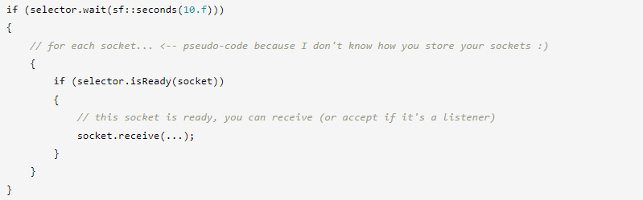

⇐Пространственность: Звуки в 3D
Сокет — это интерфейс между вашим приложением и внешним миром: через сокет вы можете отправлять и получать данные. Поэтому любой сетевой программе, скорее всего, придется иметь дело с сокетами, они являются центральным элементом сетевого общения.
Существует несколько типов сокетов, каждый из которых имеет определенные функции. SFML реализует наиболее распространенные из них: сокеты TCP и сокеты UDP.
Важно знать, что могут делать сокеты TCP и UDP, а что нет, чтобы вы могли выбрать наилучший тип сокета в соответствии с требованиями вашего приложения.
Основное отличие состоит в том, что сокеты TCP основаны на соединении. Вы не можете ничего отправлять или получать, пока не подключитесь к другому сокету TCP на удаленной машине. После подключения сокет TCP может только отправлять и получать данные на/с удаленной машины. Это означает, что вам понадобится один сокет TCP для каждого клиента в вашем приложении. UDP не основан на соединении, вы можете отправлять и получать сообщения кому угодно и когда угодно с помощью одного и того же сокета.
Второе отличие состоит в том, что TCP надежен, в отличие от UDP. Это гарантирует, что то, что вы отправляете, всегда будет получено без искажений и в том же порядке. UDP выполняет меньше проверок и не обеспечивает никакой надежности: то, что вы отправляете, может быть получено несколько раз (дублирование) или в другом порядке, или может быть потеряно и никогда не дойдет до удаленного компьютера. Однако UDP гарантирует, что полученные данные всегда действительны (не повреждены). UDP может показаться пугающим, но имейте в виду, что почти все время данные поступают правильно и в правильном порядке.
Третье отличие является прямым следствием второго: UDP быстрее и легче, чем TCP, потому что у него меньше требований, а значит, меньше накладных расходов.
Последнее отличие касается способа передачи данных. TCP — это потоковый протокол: границы сообщения отсутствуют, если вы отправите «Hello», а затем «SFML», удаленная машина может получить "HelloSFML", "Hel" + "loSFML" или даже "He" + "loS" + "FML". UDP — это протокол дейтаграмм. Дейтаграммы — это пакеты, которые нельзя смешивать друг с другом. Если вы получаете дейтаграмму с UDP, она гарантированно будет точно такой же, как была отправлена.
Да, и последнее: поскольку UDP не основан на соединении, он позволяет рассылать сообщения нескольким получателям или даже всей сети. Индивидуальная связь сокетов TCP не позволяет этого.
Как вы можете догадаться, эта часть специфична для сокетов TCP. У соединения есть две стороны: та, которая ожидает входящего соединения (назовем ее сервером), и та, которая ее инициирует (назовем ее клиентом).
На стороне клиента все просто: пользователю просто нужно иметь sf::TcpSocket и вызвать его функцию подключения, чтобы начать попытку подключения.
Первый аргумент — это адрес хоста, к которому нужно подключиться. Это sf::IpAddress, который может представлять любой допустимый адрес: URL-адрес, IP-адрес или имя сетевого узла. См. его документацию для более подробной информации.
Второй аргумент — это порт для подключения на удаленной машине. Соединение будет успешным, только если сервер принимает соединения на этом порту.
Есть необязательный третий аргумент, значение тайм-аута. Если установлено, и попытка подключения не удалась до истечения времени ожидания, функция возвращает ошибку. Если не указано, используется тайм-аут операционной системы по умолчанию.
После подключения вы можете получить адрес и порт удаленного компьютера, если это необходимо, с помощью функций getRemoteAddress() и getRemotePort().
Все функции классов сокетов по умолчанию блокируются. Это означает, что ваша программа (точнее, поток, содержащий вызов функции) будет зависать до завершения операции. Это важно, потому что некоторые функции могут выполняться очень долго: например, попытка подключения к недоступному хосту вернется только через несколько секунд, получение будет ждать, пока не будут доступны данные, и т. д.
Вы можете изменить это поведение и сделать все функции неблокирующими, используя функцию сокета setBlocking. Дополнительные сведения см. в следующих главах.
На стороне сервера нужно сделать еще несколько вещей. Требуется несколько сокетов: один, который прослушивает входящие соединения, и один для каждого подключенного клиента.
Для прослушивания соединений необходимо использовать специальный класс sf::TcpListener. Его единственная роль — ждать входящих попыток соединения на данном порту, он не может отправлять или получать данные.
Функция принятия блокируется до тех пор, пока не будет получена попытка подключения (если только сокет не настроен как неблокирующий). Когда это происходит, он инициализирует данный сокет и возвращается. Теперь сокет можно использовать для связи с новым клиентом, а прослушиватель может вернуться к ожиданию новой попытки подключения.
После успешного вызова connect (на стороне клиента) и accept (на стороне сервера) связь устанавливается, и оба сокета готовы к обмену данными.
Сокеты UDP не обязательно должны быть подключены, однако вам необходимо привязать их к определенному порту, если вы хотите иметь возможность получать данные на этот порт. Сокет UDP не может одновременно получать данные на несколько портов.
После привязки сокета к порту он готов к приему данных на этот порт. Если вы хотите, чтобы операционная система автоматически привязывала сокет к свободному порту, вы можете передать sf::Socket::AnyPort, а затем получить выбранный порт с помощью socket.getLocalPort().
Сокеты UDP, которые отправляют данные, не должны ничего делать перед отправкой.
Отправка и получение данных осуществляется одинаково для обоих типов сокетов. Единственное отличие состоит в том, что UDP имеет два дополнительных аргумента: адрес и порт отправителя/получателя. Для каждой операции есть две разные функции: низкоуровневая, которая отправляет/получает необработанный массив байтов, и высокоуровневая, использующая класс sf::Packet. См. учебник по пакетам для получения более подробной информации об этом классе. В этом уроке мы объясним только низкоуровневые функции.
Чтобы отправить данные, вы должны вызвать функцию отправки с указателем на данные, которые вы хотите отправить, и количеством байтов для отправки.
Функции отправки принимают указатель void*, так что вы можете передать адрес чего угодно. Однако, как правило, отправлять что-либо, кроме массива байтов, — плохая идея, потому что нативные типы размером более 1 байта не обязательно будут одинаковыми на каждой машине: такие типы, как int или long, могут иметь разный размер, и/или другой порядок следования байтов. Следовательно, такие типы не могут надежно обмениваться в разных системах. Эта проблема объясняется (и решается) в учебнике по пакетам.
С помощью UDP вы можете передать сообщение всей подсети за один вызов: для этого вы можете использовать специальный адрес sf::IpAddress::Broadcast.
Есть еще одна вещь, о которой следует помнить при использовании UDP: поскольку данные отправляются в дейтаграммах, а размер этих дейтаграмм имеет ограничение, вам не разрешено его превышать. Каждый вызов для отправки должен отправлять меньше, чем sf::UdpSocket::MaxDatagramSize байтов, что составляет чуть меньше 2^16 (65536) байтов.
Для получения данных необходимо вызвать функцию приема:
Важно иметь в виду, что если сокет находится в режиме блокировки, функция приема будет ждать, пока что-то не будет получено, блокируя вызвавший его поток (и, следовательно, возможно, всю программу).
Первые два аргумента указывают буфер, в который должны быть скопированы полученные байты, а также его максимальный размер. Третий аргумент — это переменная, которая будет содержать фактическое количество байтов, полученных после возврата из функции.
В сокетах UDP последние два аргумента будут содержать адрес и порт отправителя после возврата из функции. Их можно использовать позже, если вы хотите отправить ответ.
Эти функции являются низкоуровневыми, и вы должны использовать их только в том случае, если у вас есть для этого очень веская причина. Более надежный и гибкий подход предполагает использование пакетов.
Блокировка одного сокета может быстро надоесть, потому что вам, скорее всего, придется работать с более чем одним клиентом. Скорее всего, вы не хотите, чтобы сокет A блокировал вашу программу, пока сокет B получил что-то, что может быть обработано. То, что вы хотели бы, - это заблокировать сразу несколько сокетов, то есть ждать, пока какой-либо из них не получит что-то. Это возможно с помощью селекторов сокетов, представленных классом sf::SocketSelector.
Селектор может отслеживать все типы сокетов: sf::TcpSocket, sf::UdpSocket и sf::TcpListener. Чтобы добавить сокет в селектор, используйте его функцию добавления:
Селектор не является контейнером сокета. Он только ссылается (указывает) на сокеты, которые вы добавляете, но не сохраняет их. Невозможно получить или подсчитать сокеты, которые вы поместили внутрь. Вместо этого вам нужно иметь собственное отдельное хранилище сокетов (например, std::vector или std::list).
После того, как вы заполнили селектор всеми сокетами, которые вы хотите отслеживать, вы должны вызвать его функцию ожидания, чтобы дождаться, пока какой-либо из них не получит что-то (или не вызовет ошибку). Вы также можете передать необязательное значение тайм-аута, чтобы функция перестала работать, если ничего не было получено по истечении определенного периода времени — это позволяет избежать зависания навсегда, если ничего не происходит.
Если функция ожидания возвращает значение true, это означает, что один или несколько сокетов что-то получили, и вы можете безопасно вызвать получение сокета (сокетов) с ожидающими данными без их блокировки. Если сокет представляет собой sf::TcpListener, это означает, что входящее соединение готово к принятию и что вы можете вызвать его функцию приема, не блокируя его.
Поскольку селектор не является контейнером сокетов, он не может возвращать сокеты, готовые к приему. Вместо этого вы должны протестировать каждый сокет-кандидат с помощью функции isReady:
Вы можете ознакомиться с документацией по API класса sf::SocketSelector, чтобы найти рабочий пример того, как использовать селектор для обработки соединений и сообщений от нескольких клиентов.
В качестве бонуса возможность тайм-аута Selector::wait позволяет вам очень легко реализовать функцию получения с тайм-аутом, которая недоступна напрямую в классах сокетов:
Все сокеты блокируются по умолчанию, но вы можете изменить это поведение в любое время с помощью функции setBlocking.
Как только сокет установлен как неблокирующий, все его функции всегда возвращаются немедленно. Например, функция receive вернет статус sf::Socket::NotReady, если данные недоступны. Или accept немедленно вернется с тем же статусом, если нет ожидающего подключения.
Неблокирующие сокеты — самое простое решение, если у вас уже есть основной цикл, работающий с постоянной скоростью. Вы можете просто проверить, не произошло ли что-то с вашими сокетами на каждой итерации, без необходимости блокировать выполнение программы.
При использовании sf::TcpSocket в неблокирующем режиме вызовы send не гарантируют фактическую отправку всех данных, которые вы ему передаете, будь то в виде sf::Packet или необработанных данных. Начиная с SFML 2.3, при отправке необработанных данных через неблокирующий sf::TcpSocket всегда обязательно используйте перегрузку send(const void* data, std::size_t size, std::size_t& sent), которая возвращает количество байтов, фактически отправленных в переданном ссылочном параметре после возврата функции. Независимо от того, отправляете ли вы sf::Packets или необработанные данные, если в вызове была отправлена только часть данных, статус возврата будет sf::Socket::Partial, чтобы указать на частичную отправку. Если возвращается sf::Socket::Partial, вы должны правильно обработать частичную отправку, иначе произойдет повреждение данных. При отправке необработанных данных необходимо повторить попытку отправки необработанных данных со смещением в байтах, на котором остановился предыдущий вызов отправки. При отправке sf::Packets смещение в байтах сохраняется внутри самого sf::Packet. В этом случае вы должны постоянно пытаться отправить один и тот же немодифицированный объект sf::Packet снова и снова, пока не будет возвращено состояние, отличное от sf::Socket::Partial. Построить новый объект sf::Packet и заполнить его теми же данными не получится, это должен быть тот же объект, который был отправлен ранее.